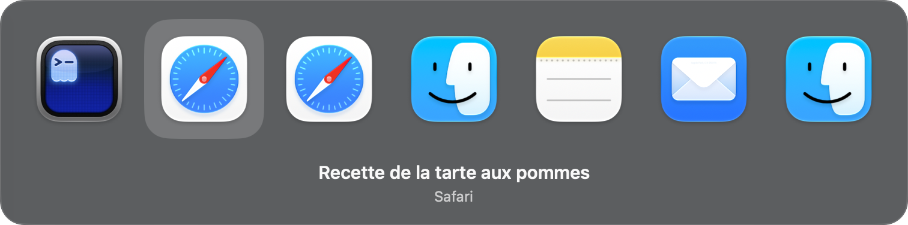

Sur Mac, Cmd+Tab passe d’appli en appli. Reprise le remplace : deux onglets Safari, puis Cmd+Tab, et c’est l’onglet d’avant qui revient, pas l’appli d’avant.

Les touches
- Cmd Tab, moins de 5 secondes
- Retour à l’onglet ou à la fenêtre d’avant, sans rien afficher. Deux appuis font l’aller-retour.
- Cmd Tab maintenus 5 secondes, ou Tab une 2e fois
- La liste des applis s’affiche, une icône par appli. Chacune ramène à sa dernière fenêtre ou à son dernier onglet. Tab pour avancer, relâcher Cmd pour y aller.
- Maj Tab
- Recule dans la liste.
- Échap
- Annule et reste où l’on est.
Installation
- Ouvrir le fichier téléchargé et glisser Reprise dans Applications.
- Lancer Reprise et l’autoriser dans Réglages Système, Confidentialité et sécurité, Accessibilité. L’app se relance alors toute seule.
- Accepter les demandes d’automatisation pour Safari, Chrome, Brave et Ghostty, si ces applis sont ouvertes. Elles servent à lire la liste des onglets et à choisir le bon. En cas de refus, l’appli reste au niveau de la fenêtre.
Reprise s’ouvre ensuite à chaque démarrage du Mac et cherche une mise à jour une fois par jour. Son icône dans la barre de menus permet de la mettre en pause, de la quitter ou de désactiver l’ouverture au démarrage.
Ce que Reprise lit
- Le clavier : de quoi reconnaître Cmd+Tab, rien de plus. Les autres frappes passent sans être notées.
- Les onglets et les fenêtres : leurs titres et leurs adresses, gardés en mémoire tant que l’app tourne et jamais écrits sur le disque. Le contenu des pages n’est pas lu.
- Le réseau : uniquement pour chercher une mise à jour, sur ce site, et la télécharger depuis GitHub. Rien d’autre n’est envoyé.
Les autres frappes passent sans être notées.
Les limites
- Firefox et VS Code ne laissent pas choisir un onglet de l’extérieur : le retour s’arrête à la bonne fenêtre.
- Une fenêtre sur un autre bureau n’apparaît pas dans la liste.
- Passer entre deux onglets de même titre peut ne pas être repéré.
- Le Cmd+Tab de macOS est coupé par une interface non documentée d’Apple. Une mise à jour de macOS pourrait l’empêcher.
- Pendant la saisie d’un mot de passe, le raccourci peut ne pas répondre.
Pour l’enlever
Quitter Reprise depuis la barre de menus : le Cmd+Tab de macOS revient tout de suite. Mettre ensuite l’app à la corbeille.
Télécharger et essayer Reprise
Publié sur Besle.org · Une page par idée